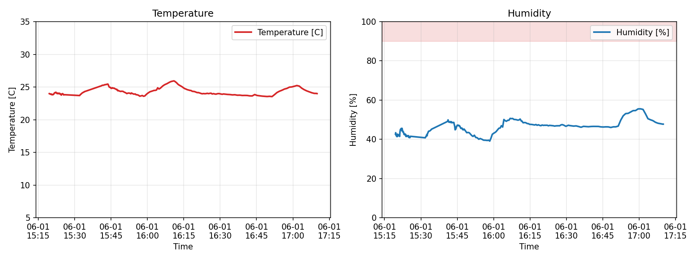

Sky Camera
全天カメラ

Dome Camera（なんとかする）
Iriki Observatory
Iriki Observatory Weather PageSky Camera
Dome Trend

Weather Forecast
MET NorwayのLocationforecast APIをもとに、入来観測所付近の今後24時間の雲量、降水量、湿度、風速、気温を表示します。
24 Hours
時間ごとの天気情報を取得しています。
24時間グラフ: Weather data by MET Norway
Instrument
使用可能
現在は搭載されていません。
使用可能
Instrument Temperature
Last Update :
| Dome | -- K（-- ℃） | ||||||
|---|---|---|---|---|---|---|---|
| J Band | -- K | H Band | -- K | Ks Band | -- K | ||
| Cold Head | -- K | Cold Plate | -- K | ||||
| Heat J | ---- | Heat H | ---- | Heat Ks | ---- | Heat CP | ---- |
| Vacuum Level | -- Pa | ||||||


「装置温度チェック」タブを開いたときに、各グラフを最新画像として再読み込みします。